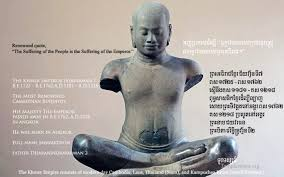

នេះជាព័ត៌មានអំពី ព្រះមហាក្សត្រនៃអង្គរ ជាភាសាខ្មែរ សរសេរជាសាមញ្ញ សមស្របសម្រាប់ការសិក្សា៖
ព្រះមហាក្សត្រនៃអង្គរ
អាណាចក្រអង្គរ ត្រូវបានគ្រប់គ្រងដោយព្រះមហាក្សត្រខ្មែរជាច្រើនអង្គ
ដែលមានតួនាទីសំខាន់ក្នុងការបង្កើត ការអភិវឌ្ឍ និងការការពារអរិយធម៌ខ្មែរ។
ព្រះបាទជ័យវរ្ម័នទី២ (គ.ស. 802–850)

ព្រះបាទជ័យវរ្ម័នទី២ ជាស្ថាបនិកនៃអាណាចក្រអង្គរ។
ក្នុងឆ្នាំ គ.ស. 802 ព្រះអង្គបានប្រកាសឯករាជ្យ និងបង្រួបបង្រួមដែនដីខ្មែរ។
ព្រះអង្គបានបង្កើតគំនិត «ទេវរាជា» ដែលធ្វើឲ្យអំណាចព្រះមហាក្សត្ររឹងមាំ។
ព្រះបាទសូរិយវរ្ម័នទី២ (គ.ស. 1113–1150)

ព្រះបាទសូរិយវរ្ម័នទី២ ជាព្រះមហាក្សត្រដែលបានសាងសង់ប្រាសាទអង្គរវត្ត
ដែលជាសំណង់សាសនាធំបំផុតក្នុងពិភពលោក។
ព្រះអង្គបានពង្រីកអាណាចក្រ និងលើកកម្ពស់សាសនាព្រះហិណ្ឌូ។
ព្រះបាទជ័យវរ្ម័នទី៧ (គ.ស. 1181–1218)

ព្រះបាទជ័យវរ្ម័នទី៧ ជាព្រះមហាក្សត្រដ៏អស្ចារ្យមួយអង្គ។
ព្រះអង្គបានលើកកម្ពស់ព្រះពុទ្ធសាសនា និងសាងសង់អង្គរធំ
ប្រាសាទបាយ័ន មន្ទីរពេទ្យ ផ្លូវ និងសាលាស្នាក់សម្រាប់ប្រជាជន។
ព្រះអង្គមានព្រះហឫទ័យមេត្តាករុណាចំពោះប្រជារាស្ត្រ។